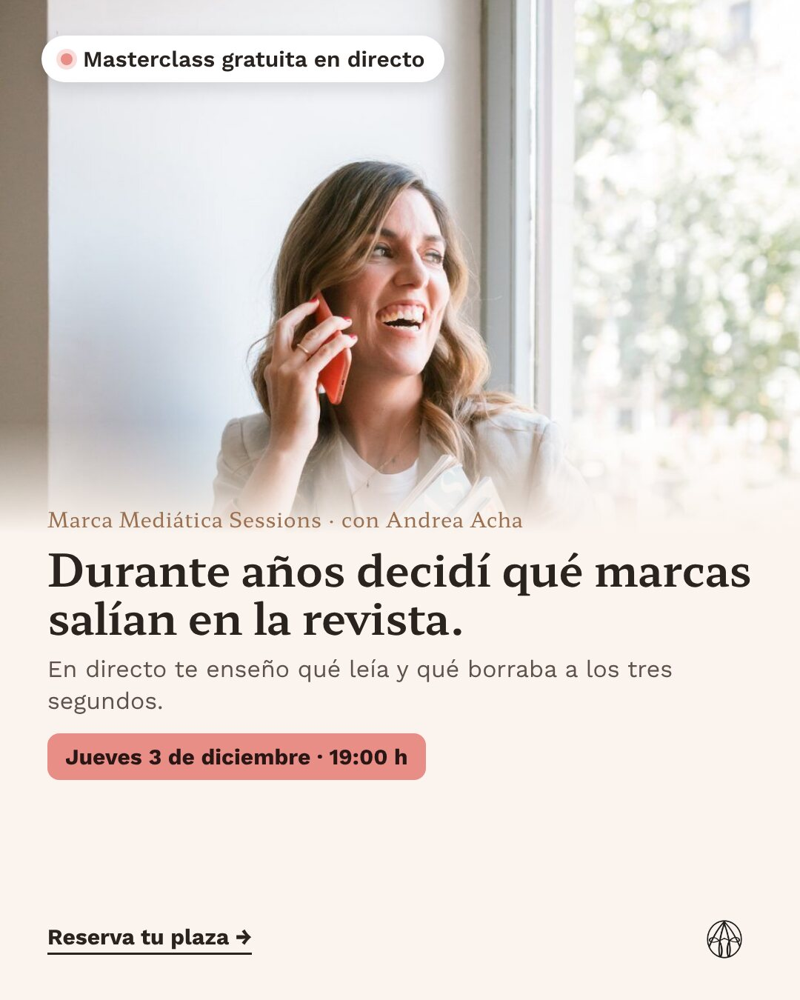
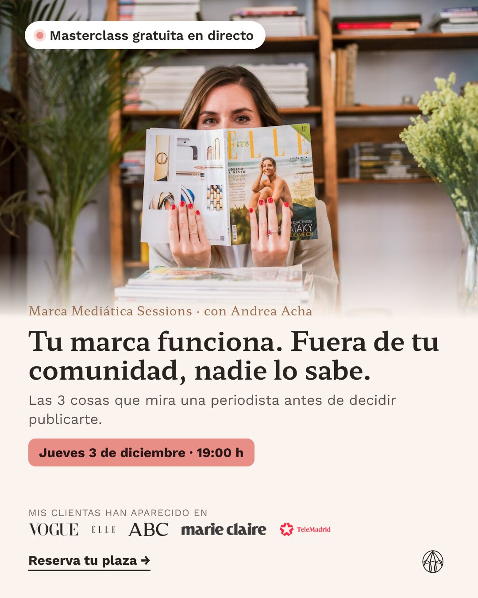
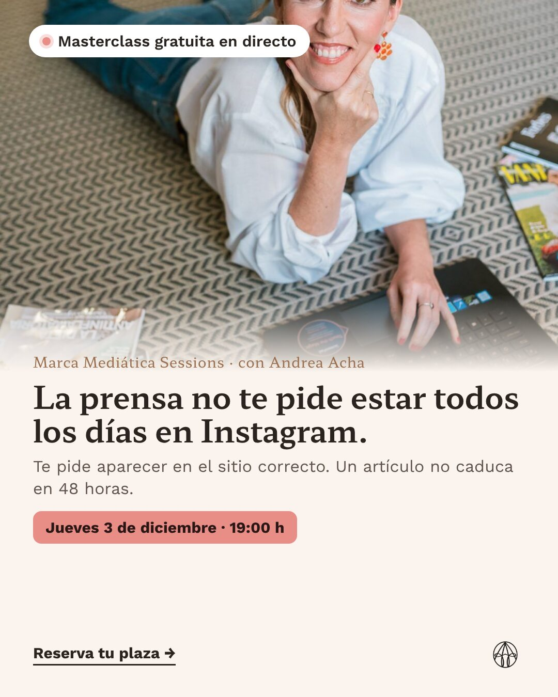

Ejemplo · Demo para Andrea Acha · Marca Mediática Sessions
Así lo viviría Lucía, que tiene una marca de cosmética natural y se registra a tu directo desde un anuncio. Y así lo verías tú. Directo de ejemplo: jueves 3 de diciembre a las 19:00.
Ejemplo Todo lo que se ve es de ejemplo: fechas, nombres, mensajes y cifras. Los textos están escritos en tu voz para que los corrijas; no sale nada sin tu aprobación. Los mensajes automáticos solo salen de 8:00 a 21:30, y el WhatsApp uno a uno solo a quien dio su permiso o te escribió.
Tres ángulos sacados de tus propios textos, todos llevando a la página de registro del directo. Lucía llega desde el primero. La galería completa, con stories y textos, está en Anuncios.
A · Al otro lado · feed 4:5

Durante años estuve al otro lado: escribiendo en revistas femeninas y decidiendo qué marcas salían. Los correos que empezaban igual, los cerraba a los tres segundos…
B · El secreto mejor guardado · feed 4:5

Tu marca funciona. Tienes clientas, te recomiendan… y fuera de tu comunidad casi nadie sabe quién eres.
C · Sin vivir en Instagram · feed 4:5

Me lo decís mucho: «estoy saturada, no tengo tiempo para sumar otra cosa más». La prensa funciona al revés…
Cada anuncio lleva su marca en el enlace. Así, cuando Lucía se registra, su ficha ya dice «anuncio A». Lo veremos al final, en el panel.
Nombre y email, como ahora, y después tres toques. Pruébalo como si fueras Lucía. La página entera, con tu marca, está en Landing.
Qué tipo de marca tiene, si ha salido ya en prensa y si quiere aprender a hacerlo ella o que alguien lo haga por ella. Y si quiere el recordatorio por WhatsApp.
Los mensajes hablan de su marca. Tu equipo sabe antes de la llamada si es una candidata a F.A.N. o a la agencia.
Casilla sin marcar por defecto: «solo recordatorios del directo, puedes salir cuando quieras». Sin casilla, solo email.
Se crea su plaza en Zoom con enlace personal, se guarda de qué anuncio viene y sale la bienvenida.
Lucía se registra un jueves a las 13:40. En menos de un minuto le llegan el correo y, como marcó la casilla, el WhatsApp. Las dos cosas buscan lo mismo: que el directo quede en su calendario.
Email al registrarse
WhatsApp al registrarse · solo si marcó la casilla
Todos los textos, con su asunto y su día. Quien se registra tarde recibe solo lo que queda. Cualquier respuesta la ve tu equipo.
Grupo · lo publica tu equipo a las 10:00
WhatsApp 12:00 · solo con permiso
Grupo · 12:30
Anuncio recordatorio en Instagram a las registradas
Story «¿Te guardo sitio para el jueves?» solo para la lista de registradas. Llega también a quien no abre el correo ni está en WhatsApp. Ver anuncios de recuerdo.
Víspera, mañana, 2 horas, 15 minutos y «estamos en directo». Este último solo a quien no ha entrado: con Zoom conectado sabemos quién está dentro y a quién no hay que molestar.
WhatsApp 19:05
Grupo · 19:10
Anuncio todo el día, solo a registradas
Story «Hoy a las 19:00 te espero en directo».
WhatsApp 17:00
WhatsApp 18:45
Grupo · 18:50
WhatsApp 19:03
Lucía entra a las 19:04 y se queda 58 minutos, hasta después de la propuesta. Su ficha pasa a «Asistió · se quedó a la propuesta». Otra registrada entra a las 19:20 y se va a las 19:40: «Asistió · se fue antes de la propuesta».
Hoy todas reciben los mismos dos emails y WhatsApps de venta. Aquí cada grupo recibe lo suyo. Pongamos que la propuesta empieza en el minuto 42 del directo.
WhatsApp T0 · 21:00
WhatsApp T+1 · 10:05 · con permiso
WhatsApp T+1 · 9:35 · con permiso
WhatsApp + Email T+3 · domingo 20:00
La página de la grabación avisa cuando pasa del minuto 42. El mensaje sale en la hora siguiente (de 8:00 a 21:30). Es donde hoy tienes más agendas: ahora sabremos quién es.
WhatsApp o Email si no hay permiso
WhatsApp + Email
Tus dos emails de venta, solo a quien asistió o vio la grabación y no ha agendado ni comprado.
Una pregunta de un toque. Cada respuesta tiene su camino; la de «tiempo» alimenta tu agencia.
«Te apunto a la lista prioritaria: te aviso antes que a nadie de la próxima edición.»
«FAN se puede pagar en cuotas. Y si prefieres empezar por algo pequeño, el Pitch Noticiable™ (47 €) te deja tu frase lista en una mañana.»
«Te entiendo. Por eso mi equipo también lleva la prensa de marcas como la tuya. ¿Quieres que te llamemos para contártelo?» → aviso a tu equipo: candidata a agencia.
Son las 21:12 del día del directo. Lucía responde al mensaje de las 21:00. Elige un camino. A la derecha, lo que pasa por detrás.
Vera se presenta como asistente del equipo. Contesta con lo que dice tu web (precio, cuotas, garantía, duración) y lleva a la llamada. No negocia, no promete apariciones y no cierra ventas. Tu equipo ve cada conversación y puede entrar cuando quiera: en cuanto escribe alguien de tu equipo, Vera se calla.
Lucía, en el WhatsApp, pulsa «Prefiero que me llaméis». A los 12 minutos suena su teléfono. La llamada dura dos minutos y su único objetivo es buscarle hora con tu equipo.
Deja un mensaje corto en el buzón:
WhatsApp justo después
Resumen en su ficha: «Cosmética natural · 2 años · salió una vez en prensa local · llamada lunes 17:30 · pregunta: cuotas». Con la grabación de la llamada, para que tu equipo la escuche si quiere.
Cifras redondas inventadas para enseñar el formato, no previsiones. En la versión real se rellena solo con cada registro, cada entrada en Zoom, cada visionado de la grabación y cada llamada.
Hoy necesitan a una persona · Ejemplo
El recorrido de este lanzamiento · Ejemplo
Por origen · un lanzamiento · Datos de ejemplo
| Origen | Registradas | % en directo | Grabación | Llamadas | Plazas | Coste por asistente |
|---|---|---|---|---|---|---|
| Anuncio A · Al otro lado | 320 | 24 % | 80 | 18 | 10 | 9 € |
| Anuncio B · Secreto mejor guardado | 280 | 17 % | 70 | 11 | 6 | 14 € |
| Anuncio C · Sin vivir en Instagram | 200 | 19 % | 55 | 13 | 6 (2 agencia) | 12 € |
| «Comenta FAN» en Instagram | 150 | 25 % | 40 | 10 | 7 | — |
| Orgánico y grupo | 250 | 22 % | 65 | 12 | 8 | — |
| Total | 1.200 | 21 % | 310 | 64 | 37 |
Datos de ejemplo. Lo que se mira para decidir el siguiente lanzamiento: coste por asistente y por llamada de cada anuncio, no el coste por registro.
Panel de ejemplo con tu nombre y datos ficticios. Pulsa «Iniciar demo» dentro para ver una historia de principio a fin.